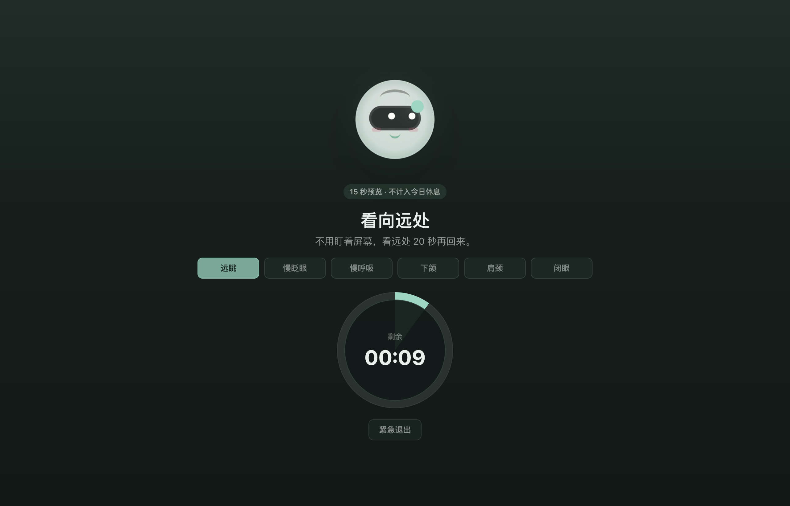
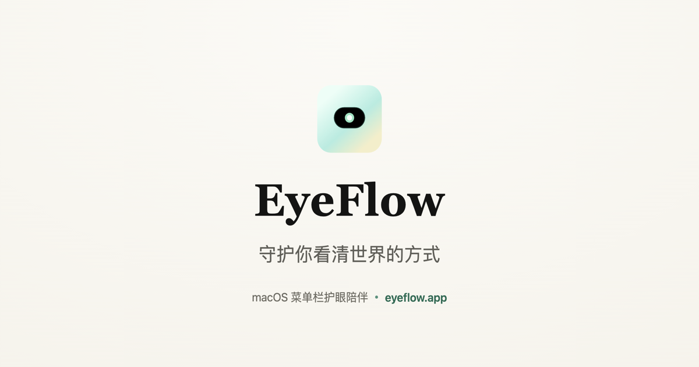

该让眼睛歇了——有人替你记得。
EyeFlow 里住着 Mira：盯太久时，她轻轻提醒你抬头看远处。不打断、不监视、不伤眼。
先说说眼睛
一天醒着的十几个小时，它几乎没停过。
你认识世界，大半从这一处进来。
磨损了不会自己长回来，只进不退。
用得最多，偏偏最难修复。正因如此，它值得被好好护着——每天，分一点点就够。
你已经盯了很久了
几个小时就这么过去。眼睛有点干、有点酸，你没太在意——因为屏幕上没有任何东西会喊停。
但有人注意到了
不开摄像头、不读屏幕内容、不上传。她不知道你在做什么，只知道有一阵子了。所有记录只留在你的 Mac 上。
一声轻唤
她从不抢屏。全程深色、不闪、不惊到你。你要是继续，她才慢慢把话说清楚一点，从不提高音量。
桌面一角
需要时冒个头，说完退回去。
顶部提醒岛
贴在屏幕顶端，看完自己收起。
歇一下
10 秒就好——看向窗外，或屋里最远的那面墙。
看向远处，我在。
EyeFlow 每天做的就是这一下——安静地，一整天。
刚才那一下，你可能真歇了，也可能只是划了过去。

她当真
不是让你点个"完成"糊弄自己。你真的离开屏幕，这一下才算数——Mira 宁可说"还看不出规律"，也不给你编个好看的数字。
每日小卡
一张小卡，收好今天的用眼节奏。不追踪、不排名，只帮你轻轻结束这一天。
